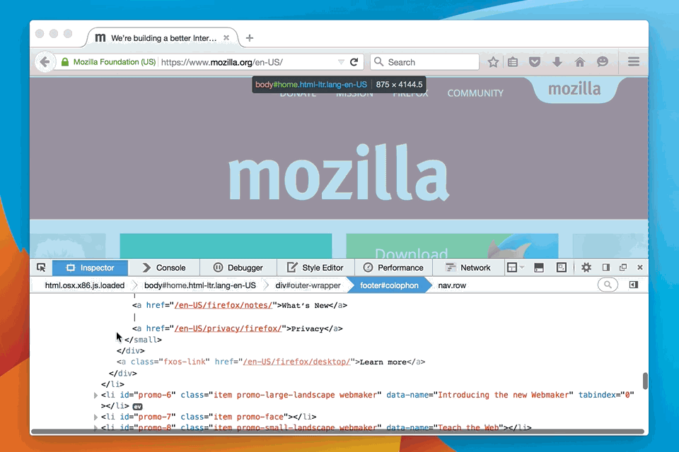
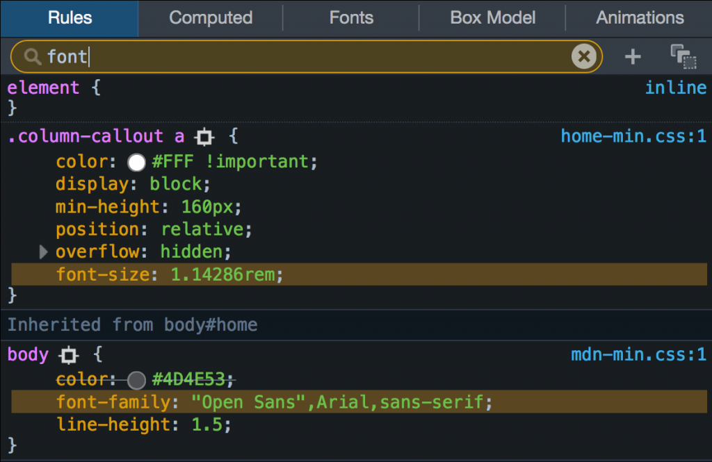
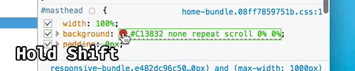
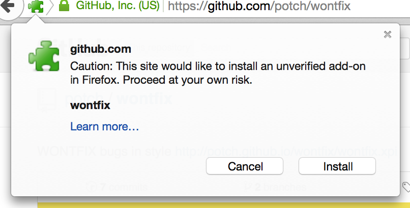

〈Trainspotting〉系列文章將重點提示 Firefox 最新版本的已上線功能。Firefox 現固定每六個星期釋出新版本，而我們稱此種模式為「Release trains」。
新版 Firefox 就如同大型噴射機一樣再度起飛！來看看哪些有趣的新東西可給使用者與開發者享受的吧。
若要完整知道相關細節，請參閱 Firefox 40 版本說明。
開發者工具
你可曾在「檢測器 (Inspector)」中找到自己需要的東西，卻不知道位在網頁的何處嗎？現在可透過檢測器中的「Markup View」，直接捲動找到所需的元素：

透過 CSS 規則篩選，可更輕鬆找出複雜的樣式表 (Stylesheets)：

在「規則 (Rule)」檢視面板中，只要按住 Shift 再於色彩之上點擊滑鼠，就能看到色彩的呈現方式：

若在 return 陳述式之後有任何程式碼，「網頁主控台 (Web Console)」將警告有某段執行不到 (Unreachable) 的程式碼。
開發者工具另加入了強大的「Performance」效能分析工具集，並已透過此篇文章搭配 Firefox 40 開發者工具來展示相關範例。
已簽署的附加元件

對所有瀏覽器來說，惡意的擴充套件一直是揮之不去的問題。因為 Firefox 附加元件 (Add-on) 功能強大，所以應該要有更好的方式保護使用者，避免惡意程式碼自行偷跑。而從 Firefox 42 開始，所有 Firefox 附加元件都必須完成簽署，才得以讓消費者安裝。在目前的 Firefox 40 中，使用者會收到未簽署擴充套件的警示，但仍可繼續逕自安裝。你可以進一步了解為何需要簽署擴充套件，並透過整體規劃來產出已簽署的擴充套件。
offsetX 與 offsetY 事件
有時候好東西就是好東西，即便耗時 14 年也還是好東西！Firefox 現可支援MouseEvents 的 offsetX 與 offsetY 屬性。往後只要是滑鼠於網頁元素中的位移事件，能更容易透過程式碼進行追蹤，而不用先取得該元素在網頁中的位置。一如既往，應先執行功能檢查以確保程式碼可跨瀏覽器運作：
el.addEventListener(function (e) {
var x, y;
if ('offsetX' in e) {
x = e.offsetX;
y = e.offsetY;
} else {
// addition needed for every offsetParent up the chain
x = e.clientX + e.target.offsetLeft / ... /;
y = e.clientY + e.target.offsetTop / ... /;
}
addGlitterMouseTrails(x, y);
}
123456789101112
el.addEventListener(function (e) { var x, y; if ('offsetX' in e) { x = e.offsetX; y = e.offsetY; } else { // addition needed for every offsetParent up the chain x = e.clientX + e.target.offsetLeft / ... /; y = e.clientY + e.target.offsetTop / ... /; } addGlitterMouseTrails(x, y);}
還沒完呢！
新版本 Firefox 釋出之前，往往先修正了許多錯誤並進行多項更正，只為了提供更好的瀏覽與開發經驗 (我當然只舉出其中兩個例子而已)。最後要提到 55 名首次貢獻此版本 Firefox 的開發者，而且其中 49 位還是真正第一次加入的貢獻者。謝謝大家！
若要了解所有細節，請參閱開發者 (Developer) 版本說明，也有已修復錯誤的完整清單。祝瀏覽愉快！